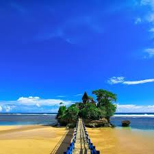

Live Status
Cek cuaca, tingkat keramaian, dan keamanan akses saat ini. Data terintegrasi BMKG & EcoWatch.

Kondisi jalur pendakian kering. Ideal untuk kunjungan, tidak ada penumpukan antrean jeep di Pananjakan. Pemandangan matahari terbit sangat jelas tanpa awan. Disarankan membawa jaket tebal dan masker untuk menghindari debu pasir vulkanik di Kaldera. Operasional jeep berjalan normal.

Debit air meningkat akibat hujan di hulu kemarin sore. Area panorama cukup padat, sistem tiket menyarankan jam kunjung sore sekitar pukul 15.00 WIB untuk menghindari penumpukan. Tangga turun ke dasar air terjun sedikit licin, disarankan menggunakan pemandu lokal dan alas kaki anti-selip.

Peringatan dini BMKG: Gelombang pasang mencapai 4 meter akibat angin kencang di Samudera Hindia. Jembatan menuju Pura Amarta Jati ditutup total. Wisatawan dilarang mendekati area bibir pantai. Operasional wisata dihentikan sementara hingga kondisi kembali normal demi keselamatan.